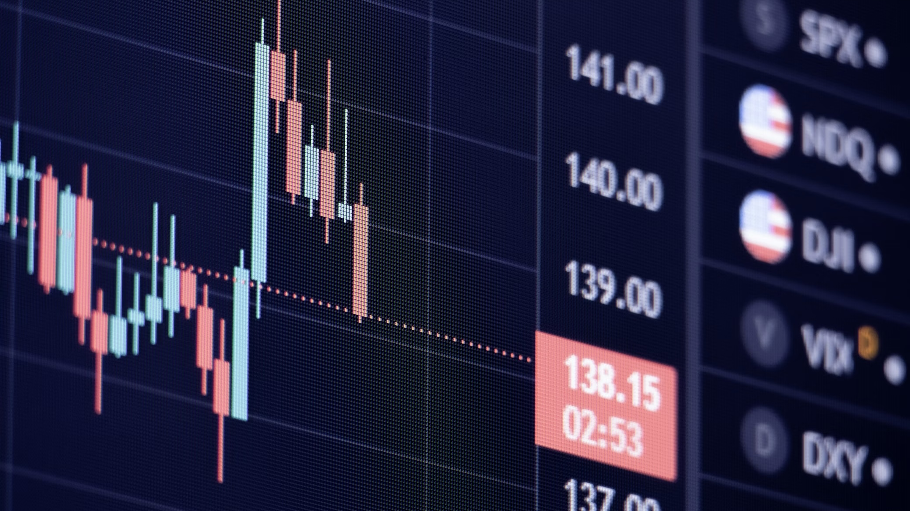

KRAFT: 코스피 선물 RL 트레이더 KRAFT: KOSPI 200 Reinforcement-learning Agent for Futures Trading
PPO 알고리즘을 활용해 KOSPI 200 미니 선물 시장에서 스윙 트레이더 에이전트를 개발했습니다. 실제 거래를 반영하기 위해 슬리피지와 수수료를 포함한 강화학습 환경을 구축하고, Sharpe Ratio 0.8과 최대 낙폭 -12%를 기록했습니다. 복합 보상 설계와 KL Penalty를 통해 정책 안정화를 구현했으며, 현재는 xAI 적용 및 성능 향상을 위한 개선을 진행 중입니다.
Developed a swing trader agent for the KOSPI 200 mini futures market using the PPO algorithm. Built a reinforcement learning environment that incorporates slippage and commissions to reflect actual trading conditions, achieving a Sharpe Ratio of 0.8 and a maximum drawdown of -12%. Implemented complex reward design and KL Penalty for policy stabilization, and currently working on xAI application and performance improvement.